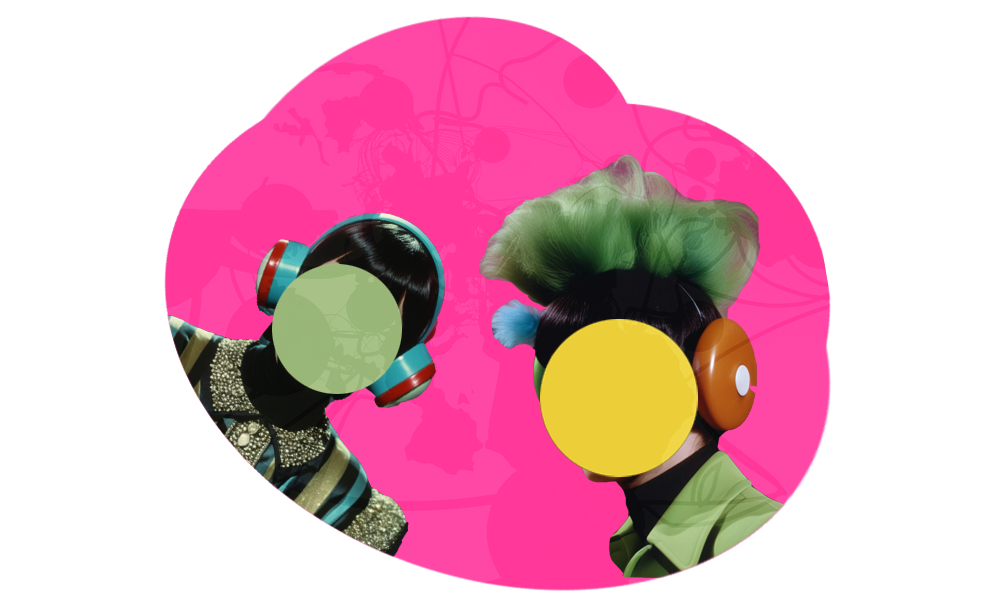
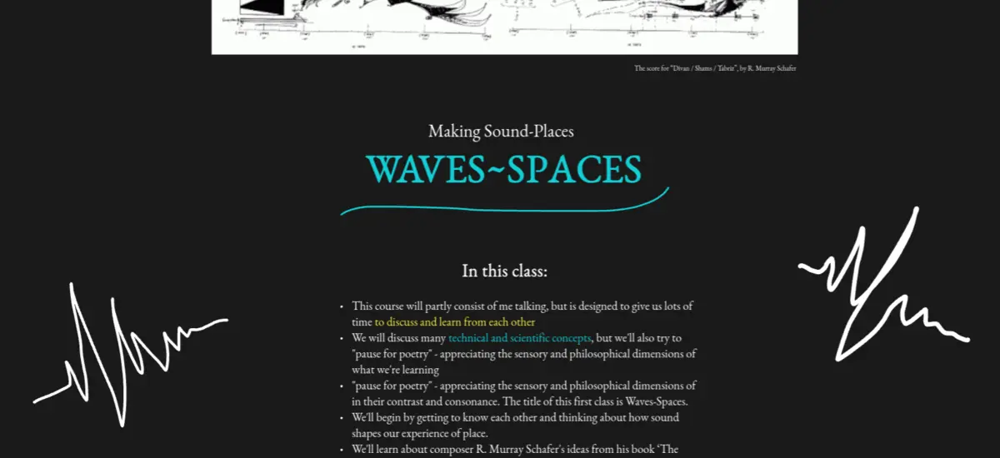

Making Sound-Places
How can sound allow us to create a sense of place in a digital world? My Making Sound-Places course first offered at the School of Machines, Making & Make-Believe in 2025 aims to provide students with a toolkit for sonic place-making on the web.
Hearing is considered our second most important sense, but the role of sound in shaping our experience of the world is often overlooked. Sound has the uncanny power to radically reframe our other sensations and embed them within spacetime. This makes sound one of the most effective tools for creating a sense of place in physical and digital worlds. Technologies such as headphones along with the Web have transformed the way we perceive our sonic environment. We already live in an augmented sonic reality for much of our waking life. As creatives, artist and designers, we can use sound to construct new sensed places - Sound-Places - accessible from all over the world with only a browser and an internet connection.
This class gives us a set of tools for sonic place-making on the Web. We begin, as sound practitioners always should, by listening. We investigate the sound-places we inhabit using R. Murray Schafer's idea of the Soundscape. We then learn about the basic elements of sound, skipping over the rigour of Western music theory through Daphne Oram's idiosyncratic approach. Once we are able to synthesize sound, we learn about how computers capture, store and play back audio, drawing from sampling approaches with focus on BIPOC artists. We take our sonic toolkit into 3D and learn about composing for places. Finally, we connect our Sound-Places over the Network, learning about digital sound as a tool for shared experiences.
By the end of the course, we will have grasped the fundamentals of analogue and digital sound, learned to program using JavaScript, Web Audio and WebSockets and explored a variety of ideas from music, engineering and ecology. We'll have had an intimate encounter with our sonic environments and discovered tools for creating Sound-Places within digital worlds. We will have created three sound art pieces on the Web, and a collaborative networked composition.
In this course, students are introduced to:
- Acoustic ecology
- Sound synthesis
- Sampling
- Field recording
- JavaScript
- Web Audio
- WebSockets